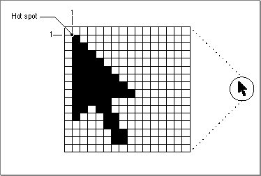
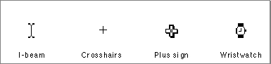
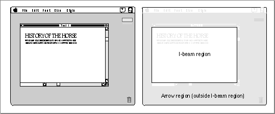
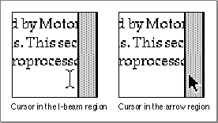
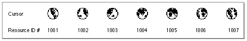
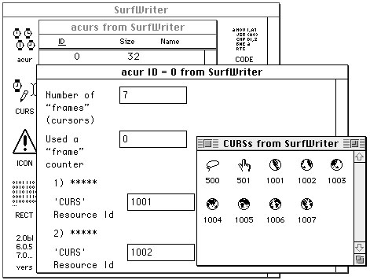

Using the Cursor Utilities
This section describes how you canTo implement cursors, you need to
- create cursors
- change the shape of the cursor
- animate a cursor to indicate that a medium-length process is taking place
You use
- define black-and-white cursors as
'CURS'resources in the resource file of your application- define color cursors in
'crsr'resources--if you want to display color cursors--in the resource file of your application- define
'acur'resources--if you want to display animated cursors--in the resource file of your application- initialize the Cursor Utilities by using the
InitCursorandInitCursorCtlprocedures when your application starts up- use the
SetCursororSetCCursorprocedure to change the cursor shape as necessary- animate the cursor by using the
SpinCursororRotateCursorprocedure'CURS'resources to create black-and-white cursors for display on black-and-white and color screens. You use'crsr'resources to create color cursors for display on systems supporting Color QuickDraw. Each'crsr'resource also contains a black-and-white image that Color QuickDraw displays on black-and-white screens.Before using the routines that handle color cursors--namely, the
GetCCursor,SetCCursor, andDisposeCCursorroutines--you must test for the existence of Color QuickDraw by using theGestaltfunction with theGestaltQuickDrawVersionselector. If the value returned in theresponseparameter is equal to or greater than the value of the constantgestalt32BitQD, then the system supports Color QuickDraw. Both basic and Color QuickDraw support all other routines described in this chapter.Initializing the Cursor
When your application starts up, the Finder sets the cursor to a wristwatch; this indicates that an operation is in progress. When your application nears completion of its initialization tasks, it should call theInitCursorprocedure to change the cursor from a wristwatch to an arrow, as shown in the application-defined procedureDoInitin Listing 8-1.Listing 8-1 Initializing the Cursor Utilities
PROCEDURE DoInit; BEGIN DoSetUpHeap; {perform Memory Manager initialization here} InitGraf(@thePort);{initialize basic QuickDraw} InitFonts; {initialize Font Manager} InitWindows; {initialize Window Manager & other Toolbox } { managers here} {perform all other initializations here} InitCursor; {set cursor to an arrow instead of a } { wristwatch} InitCursorCtl(NIL);{load resources for animated cursor with } { resource ID 0} END; {of DoInit}If your application uses an animated cursor to indicate that an operation of medium length is under way, it should also call theInitCursorCtlprocedure to load its'acur'resource and associated'CURS'resources, as illustrated in Listing 8-1.Changing the Appearance of the Cursor
Whenever the user moves the mouse, the mouse driver, the Event Manager, and your application are responsible for providing feedback to the user. The mouse driver performs low-level functions, such as continually polling the mouse for its location and status and maintaining the current location of the mouse in a global variable. Whenever the user moves the mouse, a low-level interrupt routine of the mouse driver moves the cursor displayed on the screen and aligns the hot spot of the cursor with the new mouse location. This section describes how to use theGetCursorandSetCursorroutines to change the appearance of a black-and-white cursor when it is in different areas of the screen. (To change the cursor to a color cursor, your application must use theGetCCursorfunction, described on page 8-24, and theSetCCursorprocedure, described on page 8-24.)Your application is responsible for setting the initial appearance of the cursor, for restoring the cursor after the Event Manager function
WaitNextEventreturns, and for changing the appearance of the cursor as appropriate for your application. For example, most applications set the cursor to the I-beam when the cursor is inside a text-editing area of a document, and they change the cursor to an arrow when the cursor is inside a scroll bar of a document. Your application can achieve this effect by requesting that the Event Manager report mouse-moved events if the user moves the cursor out of a region you specify in themouseRgnparameter to theWaitNextEventfunction.WaitNextEventis described in the chapter "Event Manager" in Inside Macintosh: Macintosh Toolbox Essentials.The mouse driver and your application control the shape and appearance of the cursor. A cursor can be any 256-pixel image, defined by a 16-by-16 pixel square. The mouse driver displays the current cursor, which your application can change by using the
SetCursororSetCCursorprocedure.Figure 8-2 shows the standard arrow cursor. You initialize the cursor to the standard arrow cursor when you use the
InitCursorprocedure, as shown in Listing 8-1. As shown in Figure 8-2, the hot spot for the arrow cursor is at location (1,1).Figure 8-2 The standard arrow cursor

Figure 8-3 shows four other common cursors that are available to your application: the I-beam, crosshairs, plus sign, and wristwatch cursors.Figure 8-3 The I-beam, crosshairs, plus sign, and wristwatch cursors

The I-beam, crosshairs, plus sign, and wristwatch cursors are defined as resources,
and your application can get a handle to any of these cursors by specifying their corresponding resource IDs to theGetCursorfunction. These constants specify the resource IDs for these common cursors:CONST iBeamCursor = 1; {used in text editing} crossCursor = 2; {often used for manipulating graphics} plusCursor = 3; {often used for selecting fields in } { an array} watchCursor = 4; {used when a short operation is in } { progress}After you use theGetCursorfunction to obtain a handle to one of these cursors or to one defined by your own application in a'CURS'resource, you can change the appearance of the cursor by using theSetCursorprocedure.Your application usually needs to change the shape of the cursor as the user moves the cursor to different areas within a document. Your application can use mouse-moved events to help accomplish this. Your application also needs to adjust the cursor in response to resume events. Most applications adjust the cursor once through the event loop in response to almost all events.
You can request that the Event Manager report mouse-moved events whenever the cursor is outside of a specified region that you pass as a parameter to the
WaitNextEventfunction. (If you specify an empty region or aNILhandle to theWaitNextEventfunction,WaitNextEventdoes not report mouse-moved events.)If you specify a nonempty region in the
mouseRgnparameter to theWaitNextEventfunction,WaitNextEventreturns a mouse-moved event whenever the cursor is outside of that region. For example, Figure 8-4 shows a document window. Your application might define two regions: a region that encloses the text area of the window (the I-beam region), and a region that defines the scroll bars and all other areas outside the text area (the arrow region). If your application has specified the I-beam region toWaitNextEvent, the mouse driver continues to display the I-beam cursor until the user moves the cursor out of the region.Figure 8-4 A window and its arrow and I-beam regions

When the user moves the cursor out of the I-beam region,WaitNextEventreports a mouse-moved event. Your application can then change the I-beam cursor to the arrow cursor and change themouseRgnparameter to the area defined by the scroll bars and
all other areas outside of the I-beam region. The cursor remains an arrow until the user moves the cursor out of the arrow region, at which point your application receives a mouse-moved event.Figure 8-5 shows how an application might change the cursor from the I-beam cursor to the arrow cursor after receiving a mouse-moved event.
Figure 8-5 Changing the cursor from the I-beam cursor to the arrow cursor

Note that your application should recalculate themouseRgnparameter when it receives a mouse-moved event; otherwise, it will continue to receive mouse-moved events as long as the cursor position is outside the original region.Listing 8-2 shows an application-defined routine called
MyAdjustCursor. After receiving any event other than a high-level event, the application's event loop (described in the chapter "Event Manager" in Inside Macintosh: Macintosh Toolbox Essentials) callsMyAdjustCursorto adjust the cursor.Listing 8-2 Changing the cursor
PROCEDURE MyAdjustCursor (mouse: Point; VAR region: RgnHandle); VAR window: WindowPtr; arrowRgn: RgnHandle; iBeamRgn: RgnHandle; iBeamRect: Rect; myData: MyDocRecHnd; windowType: Integer; BEGIN window := FrontWindow; {Determine the type of window--document, modeless, etc.} windowType := MyGetWindowType(window); CASE windowType OF kMyDocWindow: BEGIN {initialize regions for arrow and I-beam} arrowRgn := NewRgn; ibeamRgn := NewRgn; {set arrow region to large region at first} SetRectRgn(arrowRgn, -32768, -32768, 32766, 32766); {calculate I-beam region} {first get the document's TextEdit view rectangle} myData := MyDocRecHnd(GetWRefCon(window)); iBeamRect := myData^^.editRec^^.viewRect; SetPort(window); WITH iBeamRect DO BEGIN LocalToGlobal(topLeft); LocalToGlobal(botRight); END; RectRgn(iBeamRgn, iBeamRect); WITH window^.portBits.bounds DO SetOrigin(-left, -top); {intersect I-beam region with window's visible region} SectRgn(iBeamRgn, window^.visRgn, iBeamRgn); SetOrigin(0,0); {calculate arrow region by subtracting I-beam region} DiffRgn(arrowRgn, iBeamRgn, arrowRgn); {change the cursor and region parameter as necessary} IF PtInRgn(mouse, iBeamRgn) THEN {cursor is in I-beam rgn} BEGIN SetCursor(GetCursor(iBeamCursor)^^); {set to I-beam} CopyRgn(iBeamRgn, region); {update the region param} END; {update cursor if in arrow region} IF PtInRgn(mouse, arrowRgn) THEN {cursor is in arrow rgn} BEGIN SetCursor(arrow); {set cursor to the arrow} CopyRgn(arrowRgn, region); {update the region param} END; DisposeRgn(iBeamRgn); DisposeRgn(arrowRgn); END; {of kMyDocWindow} kMyGlobalChangesID: MyCalcCursorRgnForModelessDialogBox(window, region); kNil: BEGIN MySetRegionNoWindows(kNil, region); SetCursor(arrow); END; END; {of CASE} END;TheMyAdjustCursorprocedure sets the cursor appropriately, according to whether a document window or modeless dialog box is active.For a document window,
MyAdjustCursordefines two regions, specified by thearrowRgnandiBeamRgnvariables. If the cursor is inside the region described by thearrowRgnvariable,MyAdjustCursorsets the cursor to the arrow cursor and returns the region described byarrowRgn. Similarly, if the cursor is inside the region described by theiBeamRgnvariable,MyAdjustCursorsets the cursor to the I-beam cursor and returns the region described byiBeamRgn.The
MyAdjustCursorprocedure calculates the two regions by first setting the arrow region to the largest possible region. It then sets the I-beam region to the region described by the document's TextEdit view rectangle. This region typically corresponds to the content area of the window minus the scroll bars. (If your application doesn't use TextEdit for its document window, then set this region as appropriate to your application.) TheMyAdjustCursorroutine adjusts the I-beam region so that it includes only the part of the content area that is in the window's visible region (for example, to take into account any floating windows that might be over the window). The code in this listing sets the arrow region to include the entire screen except for the region occupied by the I-beam region. (TextEdit is described in Inside Macintosh: Text.)The
MyAdjustCursorprocedure then determines which region the cursor is in and sets the cursor and region parameter appropriately.For modeless dialog boxes,
MyAdjustCursorcalls its own routine to appropriately adjust the cursor for the modeless dialog box. TheMyAdjustCursorprocedure also appropriately adjusts the cursor if no windows are currently open.Your application should normally hide the cursor when the user is typing. You can remove the cursor image from the screen by using either the
HideCursororHide_Cursorprocedure. You can hide the cursor temporarily by using theObscureCursorprocedure, or you can hide the cursor in a given rectangle by using theShieldCursorprocedure. To display a hidden cursor, use theShowCursororShow_Cursorprocedure. Note that you do not need to explicitly show the cursor after your application uses theObscureCursorprocedure; instead, the cursor automatically reappears when the user moves the mouse again. These procedures are described in "Hiding and Showing Cursors" beginning on page 8-26.Creating an Animated Cursor
Your application should display an animated cursor when performing a medium-length operation that might cause the user to think that the computer has stopped working. To create an animated cursor, you should
- create a series of
'CURS'resources that make up the "frames" of the animation- create an
'acur'resource with a resource ID of 0- pass the value
NILto theInitCursorCtlprocedure once in your program code to load these resources- use either the
RotateCursororSpinCursorprocedure when your application is busy with its taskTypically, an animated cursor uses four to seven frames. For example, the seven
- Note
- An alternate, but more code-intensive, method of creating and displaying an animated cursor is shown in the chapter "Vertical Retrace Manager" in Inside Macintosh: Processes.
'CURS'resources in Figure 8-6 constitute the seven frames of a globe cursor that spins. To create these resources, your application typically uses a high-level utility such as ResEdit, which is available from APDA.Figure 8-6 The
'CURS'resources for an animated globe cursor
To collect and order your'CURS'frames into a single animation, you must create an'acur'resource. This resource specifies the IDs of the'CURS'resources and the sequence for displaying them in your animation. If your application uses only one spinning cursor, give your'acur'resource a resource ID of 0.Figure 8-7 shows how the
'CURS'resources for the spinning globe cursor are specified in an'acur'resource using ResEdit.Figure 8-7 An
'acur'resource for an animated cursor
To load the'acur'resource and its associated'CURS'resources, use theInitCursorCtlprocedure once prior to calling theRotateCursororSpinCursorprocedure. If you passNILtoInitCursorCtl, then it automatically loads the'acur'resource that has an ID of 0 in your application's resource file. If you wish to use multiple animated cursors, you must create multiple'acur'resources--that is, one for each series of'CURS'resources. Prior to displaying one of your animated cursors withRotateCursororSpinCursor, you must call the Resource Manager functionGetResourceto return a handle to its'acur'resource. Your application must coerce that handle to one of typeacurHandle, and then pass this handle to theInitCursorCtlprocedure. See the chapter "Resource Manager" in Inside Macintosh: More Macintosh Toolbox for more information aboutGetResource.When you call
RotateCursororSpinCursor, one frame--that is, one'CURS'resource--is displayed. When you pass a positive value to the procedure the next time you call it, the next frame specified in the'acur'resource is displayed. A negative value passed to either procedure displays the previous frame listed in the'acur'resource. The distinction betweenRotateCursorandSpinCursoris that your application maintains an index for changing the cursor when callingRotateCursor, but your application does not maintain an index for changing the cursor when callingSpinCursor; instead, your application must determine the proper interval for callingSpinCursor.Listing 8-3 shows an application-defined routine called
MyRotateCursor. When the application callingMyRotateCursorstarts on a medium-length operation and needs to indicate to the user that the operation is in progress, the application sets its global variablegDonetoFALSEand repeatedly callsMyRotateCursoruntil the operation is complete andgDonebecomesTRUE.Listing 8-3 Animating a cursor with the
RotateCursorprocedurePROCEDURE MyRotateCursor; BEGIN IF NOT gDone THEN BEGIN RotateCursor(TickCount); END; END;Listing 8-3 uses the Event Manager functionTickCountto maintain an index forRotateCursorto use when displaying the frames for an animated cursor. (A tick is approximately 1/60 of a second;TickCountreturns the number of ticks since the computer started up.) When the value passed as a parameter toRotateCursoris a multiple of 32, thenRotateCursordisplays the next frame in the animation.Listing 8-4 shows an application-defined routine called
MySpinCursor. As you see in Listing 8-4, the application does not maintain an index for displaying the frames for an animated cursor. Instead, every timeSpinCursoris called, the next frame in the animation is displayed.Listing 8-4 Animating a cursor with the
SpinCursorprocedurePROCEDURE MySpinCursor; BEGIN IF NOT gDone THEN SpinCursor(0); END;If the operation takes less than a second or two, your application can simply use theSetCursorprocedure to display the cursor with the resource ID represented by thewatchCursorconstant. If the operation will take longer than several seconds (a lengthy operation), your application should display a status indicator in a dialog box to show the user the estimated total time and the elapsing time of the operation. See the chapter "Dialog Manager" in Inside Macintosh: Macintosh Toolbox Essentials for information about creating and displaying dialog boxes.